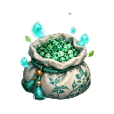

HERB-001Thanh Linh ThảoĐọc từ trái sang phải, rồi xuống hàng. Số ô bắt đầu từ 1 trong từng atlas; mỗi ô 128×128 px. Mã item có thể không liên tục; số ô là vị trí trong ảnh, không phải hậu tố mã. Tên được hiệu chỉnh theo biểu tượng. Tên hạt giống theo linh thảo cùng mã. Các tên mang tính mô tả hình ảnh, không xác định hiệu ứng gameplay.
HERB-001Thanh Linh ThảoHERB-002Huyết Diệp HoaHERB-003Thổ Linh SâmHERB-004Xích Dương HoaHERB-005Ngưng Lộ ThảoHERB-006Ngân Linh LanHERB-007Mộc Tâm ĐằngHERB-008Thanh Lam HoaHERB-009Xích Linh QuảHERB-010Kim Dương DiệpHERB-011Hàn Nguyệt LiênHERB-012Tử Linh HoaHERB-013Thọ Nguyên QuảHERB-014Tử Văn Linh ChiHERB-015Lôi Văn HoaHERB-016Kim Cúc Linh HoaHERB-017Tâm Tĩnh TrúcHERB-018Huyết Long ĐằngHERB-019Linh Đào QuảHERB-020Mộc Tâm NhaHERB-021Bạch Hoa Linh SâmHERB-022Thanh Hồn LiênHERB-023Băng Tâm LiênHERB-024Tử Tinh DiệpHERB-025Tinh Huy HoaHERB-026Thanh Hồn LiễuHERB-027Bích Ngọc Linh DiệpHERB-028Xích Linh ChiHERB-029Hư Không LanHERB-030Ngọc Sương HoaHERB-031Kim Linh QuảHERB-032Địa Mạch SâmHERB-033Lam Linh LanHERB-034Lưỡng Sinh DiệpHERB-035Tẩy Linh QuảHERB-036Đại Thừa Kim LiênHERB-037Hợp Nguyên QuảHERB-038Không Minh HoaHERB-039Thanh Long ĐằngHERB-040Thiên Linh TrúcHERB-041Tinh Không LanHERB-042Kim Tu ThảoHERB-043Hồng Liên Linh HoaHERB-044Ngân Sương HoaHERB-045Cửu Khúc Linh SâmHERB-046Vấn Tâm HoaHERB-047Thiên Hồn QuảHERB-048Giới Kiếp Tử LiênHERB-049Vân Hạc Tiên ThảoHERB-050Thổ Tôn QuảHERB-051Đản Hồn HoaHERB-052Cầu Long ThảoHERB-053Thiên Linh Trúc DiệpHERB-054Cuồng Diễm ThảoHERB-055Tinh Huy Tiên ThảoHERB-056Lộc Nhung Tiên ThảoHERB-057Vạn Hồn Tiên ThảoHERB-058Huyền Chỉ Tiên HoaHERB-059Lưỡng Sinh Tiên QuảHERB-060Kim Tu Thập DiệpHERB-061Khổ Lạc HoaHERB-062Huyền Chân Linh ChiHERB-063U Thủy Tiên LiênHERB-064Thời Sa HoaHERB-065Không Gian Linh QuảHERB-066Luân Hồi QuảHERB-067Đạo Tâm LiênHERB-068Tiên Khiếu QuảHERB-069Kim Hồn Tiên QuảHERB-070Thái Ất Ngọc ChiHERB-071Đại Đạo Kim LiênHERB-072Hư Không Ma HoaHERB-073Ngân Vân Linh ChiHERB-074Kim Tu Linh SâmHERB-075Tử Vân Linh ChiHERB-076Ngân Ti Bạch LanHERB-077Ngũ Sắc Linh QuảHERB-078Bích Ngọc Linh TrúcHERB-079Xích Viêm Linh QuảHERB-080Kim Tinh HoaSEED-HERB-001Hạt Thanh Linh ThảoSEED-HERB-002Hạt Huyết Diệp HoaSEED-HERB-003Hạt Thổ Linh SâmSEED-HERB-004Hạt Xích Dương HoaSEED-HERB-005Hạt Ngưng Lộ ThảoSEED-HERB-006Hạt Ngân Linh LanSEED-HERB-007Hạt Mộc Tâm ĐằngSEED-HERB-008Hạt Thanh Lam HoaSEED-HERB-009Hạt Xích Linh QuảSEED-HERB-010Hạt Kim Dương DiệpSEED-HERB-011Hạt Hàn Nguyệt LiênSEED-HERB-012Hạt Tử Linh HoaSEED-HERB-013Hạt Thọ Nguyên QuảSEED-HERB-014Hạt Tử Văn Linh ChiSEED-HERB-015Hạt Lôi Văn HoaSEED-HERB-016Hạt Kim Cúc Linh HoaSEED-HERB-017Hạt Tâm Tĩnh TrúcSEED-HERB-018Hạt Huyết Long ĐằngSEED-HERB-019Hạt Linh Đào QuảSEED-HERB-020Hạt Mộc Tâm NhaSEED-HERB-021Hạt Bạch Hoa Linh SâmSEED-HERB-022Hạt Thanh Hồn LiênSEED-HERB-023Hạt Băng Tâm LiênSEED-HERB-024Hạt Tử Tinh DiệpSEED-HERB-025Hạt Tinh Huy HoaSEED-HERB-026Hạt Thanh Hồn LiễuSEED-HERB-027Hạt Bích Ngọc Linh DiệpSEED-HERB-028Hạt Xích Linh ChiSEED-HERB-029Hạt Hư Không LanSEED-HERB-030Hạt Ngọc Sương HoaSEED-HERB-031Hạt Kim Linh QuảSEED-HERB-032Hạt Địa Mạch SâmSEED-HERB-033Hạt Lam Linh LanSEED-HERB-034Hạt Lưỡng Sinh DiệpSEED-HERB-035Hạt Tẩy Linh QuảSEED-HERB-036Hạt Đại Thừa Kim LiênSEED-HERB-037Hạt Hợp Nguyên QuảSEED-HERB-038Hạt Không Minh HoaSEED-HERB-039Hạt Thanh Long ĐằngSEED-HERB-040Hạt Thiên Linh TrúcSEED-HERB-041Hạt Tinh Không LanSEED-HERB-042Hạt Kim Tu ThảoSEED-HERB-043Hạt Hồng Liên Linh HoaSEED-HERB-044Hạt Ngân Sương HoaSEED-HERB-045Hạt Cửu Khúc Linh SâmSEED-HERB-046Hạt Vấn Tâm HoaSEED-HERB-047Hạt Thiên Hồn QuảSEED-HERB-048Hạt Giới Kiếp Tử LiênSEED-HERB-049Hạt Vân Hạc Tiên ThảoSEED-HERB-050Hạt Thổ Tôn QuảSEED-HERB-051Hạt Đản Hồn HoaSEED-HERB-052Hạt Cầu Long ThảoSEED-HERB-053Hạt Thiên Linh Trúc DiệpSEED-HERB-054Hạt Cuồng Diễm ThảoSEED-HERB-055Hạt Tinh Huy Tiên ThảoSEED-HERB-056Hạt Lộc Nhung Tiên ThảoSEED-HERB-057Hạt Vạn Hồn Tiên ThảoSEED-HERB-058Hạt Huyền Chỉ Tiên HoaSEED-HERB-059Hạt Lưỡng Sinh Tiên QuảSEED-HERB-060Hạt Kim Tu Thập DiệpSEED-HERB-061Hạt Khổ Lạc HoaSEED-HERB-062Hạt Huyền Chân Linh ChiSEED-HERB-063Hạt U Thủy Tiên LiênSEED-HERB-064Hạt Thời Sa HoaSEED-HERB-065Hạt Không Gian Linh QuảSEED-HERB-067Hạt Đạo Tâm LiênSEED-HERB-068Hạt Tiên Khiếu QuảSEED-HERB-069Hạt Kim Hồn Tiên QuảSEED-HERB-070Hạt Thái Ất Ngọc ChiMAT-001Hạt Linh ThảoMAT-002Quặng Linh ThiếtMAT-003Giấy PhùMAT-004Yêu ĐanMAT-005Kiếm Phôi Thanh VânMAT-006Huyết TinhMAT-007Vạn Dược LệnhMAT-008Giới ThạchMAT-009Lôi TinhMAT-010Hỏa TủyMAT-011Hàn TinhMAT-012Phong ThạchMAT-013Ngũ Hành Tinh BộtMAT-014Linh MộcMAT-015Yêu CốtMAT-016Yêu BìMAT-018Trận Kỳ PhôiMAT-019Hư Không Tinh SaMAT-020Pháp Tướng Linh TủyMAT-021Vạn Hồn TinhMAT-022Giới Tâm ThạchMAT-023Cổ Trận Tàn VănMAT-024Linh Bảo PhôiMAT-025Tinh Không ThiếtMAT-026Hư Linh MộcMAT-027Ma TinhMAT-028Kiếm Ý TinhMAT-029Thiên Cơ ĐồngMAT-031Sát TinhMAT-032Ngũ Hành Linh TủyMAT-035Linh Văn MựcMAT-036Cổ Giới ThạchMAT-037Tiên Linh Ngọc TủyMAT-038Pháp Tắc Tinh SaMAT-039Đại Đạo Tàn PhiếnMAT-040Tiên Khí PhôiMAT-041Suy Kiếp Chi TứcMAT-042Đạo VănMAT-043Tiên KimMAT-044Hư Không Tiên TinhMAT-045Thời SaMAT-046Luân Hồi TinhMAT-047Linh Hồn NgọcMAT-048Thiên Lôi TinhMAT-049Ngũ Hành Đạo TinhMAT-050Linh Vực Tinh HạchMAT-051Tiên Khiếu NgọcMAT-052Đạo Tâm MảnhMAT-053Đại La Kim SaMAT-054Quy Hương Tinh TrầnTAL-001Hỏa Cầu PhùTAL-002Hàn Băng PhùTAL-003Lôi Đình PhùTAL-004Tật Phong PhùTAL-005Trấn Sơn PhùTAL-006Hư Kiếm PhùTAL-007Hộ Thân PhùTAL-008Huyền Giáp PhùTAL-009Hộ Giới PhùTAL-010Nguyệt Quang Hộ Thân PhùTAL-011Cự Lực PhùTAL-012Tử Linh Trấn Hồn PhùTAL-013Liệt Diễm PhùTAL-014Phong Nhận PhùTAL-015Thanh Mộc Hồi Xuân PhùTAL-016Băng Liên Tĩnh Tâm PhùTAL-017Tử Đồng Linh Thị PhùTAL-018Ngự Thú PhùTAL-019Mộc Linh Sinh Tức PhùTAL-020Phi Vũ Khinh Thân PhùTAL-021Thiên Nhãn PhùTAL-022Thủy Long PhùTAL-023U Nguyệt PhùTAL-024Truyền Âm Linh Hạc PhùTAL-025Dưỡng Mộc Linh Lộ PhùTAL-026Song Hoàn Hộ Mệnh PhùTAL-027Dẫn Lộ Minh Đăng PhùTAL-028Thanh Quang Kết Giới PhùTAL-029Xích Văn Phong Ấn PhùTAL-030Tịnh Liên Hộ Hồn PhùTAL-031Nguyệt Ảnh Mê Tung PhùTAL-032Âm Nguyệt Tụ Linh PhùTAL-033Phá Vọng Linh Nhãn PhùTAL-034Nhật Hoa Sinh Cơ PhùTAL-035Vô Thanh PhùTAL-036Thiên Bình Định Tâm PhùGFT-HG-002Bền Mặc ChỉGFT-HG-004Tế Văn Kiếm Lệ ThạchGFT-HG-006An Thần Dược NangGFT-HG-008Tinh Tượng Tiểu ĐồGFT-HG-010Dưỡng Nhận DuGFT-HG-013Lưu Châu Bút Phục ChếGFT-HG-014Lữ Hành Lương NangGFT-HG-016Thảo Mộc Biện Hình ThiêmGFT-HG-017Hậu Chỉ Y Án BộGFT-HG-018Diễn Trận Tinh SaGFT-HG-019Y Thuật Phùng ChâmGFT-HG-021Tuyến Trang Thu Chi BộGFT-HG-023Dạ Độc Du ĐăngGFT-HG-028Tàng Thư Mộc HạpGFT-HG-029Thức Nhận CânGFT-HG-030Văn Khế Ấn HạpGFT-HG-032Xích BốGFT-HG-033Lạp Bố Vũ YGFT-HG-034Hộ Uyển Hệ ThằngGFT-HG-035Mộc Kỳ Tiểu CụcBT-001Bí tịch · Bạch Vân Kiếm QuyếtBT-002Bí tịch · Thanh Mộc Trường Sinh KinhBT-003Bí tịch · Kim Quang Kiếm QuyếtBT-004Bí tịch · Cổ Bản Bạch Vân Kiếm QuyếtBT-005Bí tịch · Tiên Hạc Ngự Phong KinhBT-006Bí tịch · Thiên Canh Tiên Kiếm KinhBT-007Bí tịch · Bích Hải Quy Nguyên KinhBT-008Bí tịch · Xích Viêm Phượng Vũ QuyếtBT-009Bí tịch · Vạn Mộc Hồi Xuân KinhBT-010Bí tịch · Cổ Bản Thanh Mộc KinhBT-011Bí tịch · Tử Long Ngự Lôi KinhBT-012Bí tịch · Bất Diệt Thanh Mộc KinhBT-013Bí tịch · Hậu Thổ Trấn Sơn QuyềnBT-014Bí tịch · Băng Liên Tĩnh Tâm QuyếtBT-015Bí tịch · Vô Lượng Bích Hải KinhBT-016Bí tịch · Cổ Bản Bích Hải KinhBT-017Bí tịch · Linh Lộ Dưỡng Nguyên QuyếtBT-018Bí tịch · Thương Hải Tiên KinhBT-019Bí tịch · Bạch Hạc Ngự Phong QuyếtBT-020Bí tịch · Tử Long Lôi Đình QuyếtBT-021Bí tịch · Phượng Hoàng Chân Hỏa KinhBT-022Bí tịch · Cổ Bản Xích Phượng KinhBT-023Bí tịch · Huyền Giáp Hộ Thân KinhBT-024Bí tịch · Phượng Hoàng Niết Bàn KinhBT-025Bí tịch · Cổ Bản Liệt Hỏa QuyếtBT-026Bí tịch · Cổ Bản Hậu Thổ QuyềnBT-027Bí tịch · Kim Cang Trấn Sơn QuyềnBT-028Bí tịch · Cổ Bản Băng Liên KinhBT-029Bí tịch · Tịnh Liên Dưỡng Tâm KinhBT-030Bí tịch · Bất Động Sơn Hà KinhBT-031Bí tịch · Hàn Sương Băng PhápBT-032Bí tịch · Cổ Bản Ngự Phong QuyếtBT-033Bí tịch · Cửu U Băng Phách KinhBT-034Bí tịch · Cổ Bản Tử Long QuyếtBT-035Bí tịch · Thái Dương Dưỡng Nguyên KinhBT-036Bí tịch · Vô Cực Hàn VựcBT-037Bí tịch · Cổ Bản Lôi Đình QuyếtBT-038Bí tịch · Cổ Bản Kiếm Khí QuyếtBT-039Bí tịch · Cửu Thiên Ngự Hạc KinhBT-040Bí tịch · Thần Tiêu Lôi Long KinhBT-041Bí tịch · Phong Dực Tiêu Dao QuyếtBT-042Bí tịch · Thanh Liên Hồi Sinh KinhBT-043Bí tịch · Cổ Bản Tật Phong QuyếtBT-044Bí tịch · Cổ Bản Trấn Sơn QuyềnBT-045Bí tịch · Liệt Diễm Phần Thiên KinhBT-046Bí tịch · Huyền Băng Trấn Hải KinhBT-047Bí tịch · Linh Lộ Hồi Nguyên KinhBT-048Bí tịch · Huyền Giáp Trấn Thân KinhBT-049Bí tịch · Thanh Mộc Sinh Hỏa QuyếtBT-050Bí tịch · Hàn Băng Ngưng Khí QuyếtBT-051Bí tịch · Ngũ Lôi Chính PhápBT-052Bí tịch · Phong Vân Độn PhápBT-053Bí tịch · Tử Điện Phá HồnBT-054Bí tịch · Cổ Bản Thái Dương KinhBT-055Bí tịch · Cổ Bản Phong Dực QuyếtBT-056Bí tịch · Cổ Bản Thanh Liên KinhBT-057Bí tịch · Băng Tâm Tịnh Liên KinhBT-058Bí tịch · Đại Nhật Chân Hỏa KinhBT-059Bí tịch · Thanh Phong Kiếm PhápBT-060Bí tịch · Hậu Thổ Hộ Thân QuyềnBT-061Bí tịch · Thái Hư Ngự Phong KinhBT-062Bí tịch · Kim Kiếm Phá Vân KinhBT-063Bí tịch · Kim Thân Bất Hoại KinhBT-064Bí tịch · Băng Liên Huyền Vực KinhBT-065Bí tịch · Xích Diễm Phần Không KinhBT-066Bí tịch · Tử Điện Tiên Lôi KinhBT-067Bí tịch · Cửu Thiên Tật Phong KinhBT-068Bí tịch · Vạn Kiếm Quy NhấtBT-069Bí tịch · Đại Nhật Kim Thân KinhBT-070Bí tịch · Băng Tâm Huyền Vực KinhBT-071Bí tịch · Thái Dương Chân Hỏa KinhBT-072Bí tịch · Phong Dực Tiêu Dao Tiên KinhBT-073Bí tịch · Thanh Liên Trường Sinh KinhBT-074Bí tịch · Huyền Thủy Ngưng Tâm KinhBT-075Bí tịch · Băng Sơn Trấn Hải QuyếtBT-076Bí tịch · Hàn Nguyệt Băng Tâm KinhBT-077Bí tịch · Mộc Linh Sinh Tức QuyếtBT-078Bí tịch · Bích Thủy Trường Lưu KinhBT-079Bí tịch · Huyền Giáp Hộ Thân Tiên KinhBT-DKQ-001Dẫn Khí Ngự Phong QuyếtEQ-001Thanh Vân Sư Tử ẤnEQ-002Thanh Mộc Linh ThápEQ-003Thanh Âm Đồng ChungEQ-004Lôi Văn Đồng ChùyEQ-005Thanh Vân Linh CungEQ-006Minh Quang Đồng KínhEQ-007Dưỡng Khí Hồ LôEQ-008Huyền Thiết Linh ThuẫnEQ-009Bát Quái La BànEQ-010Thủy Linh ChâuEQ-011Thanh Vân Linh ChuEQ-012Tĩnh Tâm Hương LôEQ-013Thanh Ngọc Linh BộiEQ-014Bích Ngọc Như ÝEQ-015Đàn Mộc Niệm ChâuEQ-016Bạch Vũ Linh PhiếnEQ-017Thanh Ngọc Linh TiêuEQ-018Thanh Vân Linh TánEQ-019Băng Tinh Linh BútEQ-020Kim Ngọc Linh HoànEQ-021Tinh Tượng Linh BànEQ-022Ngũ Hành Tàng Chân KiếmEQ-023Thanh Vân Tàng Chân Pháp YEQ-024Huyết Sát Tàng Chân Linh NgoaEQ-025Vạn Dược Tàng Chân Hộ Tâm BộiEQ-026Ngũ Hành Tàng Chân Linh GiớiEQ-027Thanh Vân Tàng Chân Đạo ẤnEQ-028Huyết Sát Tàng Chân Linh BànEQ-029Thái Hư Linh ThápEQ-030Vô Tướng Linh ChùyEQ-031Thiên Cơ Trận KỳEQ-032Tinh Không Linh CungEQ-033Thái Hư Lôi ĐaoEQ-034Vô Tướng Linh ĐỉnhEQ-035Thiên Cơ Hồ LôEQ-036Vô Tướng Huyền ThuẫnEQ-037Thiên Cơ Linh KiếmEQ-038Tinh Không Linh ChâuEQ-039Thái Hư Long ChuEQ-040Vô Tướng Hương LôEQ-041Thiên Cơ Ngọc BộiEQ-042Tinh Không Như ÝEQ-043Thiên Cơ Niệm ChâuEQ-044Tinh Không Vũ PhiếnEQ-045Thái Hư Ngọc TiêuEQ-046Vô Tướng Linh TánEQ-047Thiên Cơ Linh BútEQ-048Tinh Không Ngọc HoànEQ-049Thái Hư Tinh BànEQ-050Cửu Tiêu Kim ThápEQ-051Vạn Pháp Kim ChungEQ-052Kim Vân Tiên KỳEQ-053Quy Hương Tiên ĐỉnhEQ-054Cửu Tiêu Hồ LôEQ-055Vạn Pháp Ngọc PhiếnEQ-056Ngọc Thanh Linh PhấtEQ-057Vạn Pháp Lôi CổEQ-058U Minh Ngưng Quang Pháp YEQ-059Quy Hương Ngưng Quang Linh NgoaEQ-060Cửu Tiêu Ngưng Quang Hộ Tâm BộiEQ-061Vạn Pháp Ngưng Quang Linh GiớiEQ-062U Minh Ngưng Quang Đạo ẤnEQ-063Quy Hương Ngưng Quang Linh BànEQ-064U Minh Trầm Hoa KiếmEQ-065Quy Hương Trầm Hoa Pháp YEQ-066Cửu Tiêu Trầm Hoa Linh NgoaEQ-067Vạn Pháp Trầm Hoa Hộ Tâm BộiEQ-068U Minh Trầm Hoa Linh GiớiEQ-069Quy Hương Trầm Hoa Đạo ẤnEQ-070Cửu Tiêu Trầm Hoa Linh BànEQ-071Thanh Phong KiếmEQ-072Huyết Ma ĐaoEQ-073Dược Vương ĐỉnhEQ-074Ngũ Lôi Trận KỳEQ-075Thái Hư Kiếm Trận BànEQ-076Vô Tướng Ma ẤnEQ-077Thiên Cơ KínhEQ-078Giới Tâm ChungEQ-079Cửu Tiêu Tiên Kiếm TrậnEQ-080Vạn Pháp LuânEQ-081U Minh Luân Hồi ĐăngEQ-082Quy Hương Bạch Ngọc ẤnPILL-026Hồng Liên Thổ ĐanPILL-027Hồng Liên Mộc ĐanPILL-028Hồng Liên Thủy ĐanPILL-029Hồng Liên Tử ĐanPILL-030Hồng Liên Kim ĐanPILL-031Thủy Vân Thổ ĐanPILL-032Thủy Vân Mộc ĐanPILL-033Thủy Vân Thủy ĐanPILL-034Thủy Vân Tử ĐanPILL-035Thủy Vân Kim ĐanPILL-036Tường Vân Thổ ĐanPILL-037Tường Vân Mộc ĐanPILL-038Tường Vân Thủy ĐanPILL-039Tường Vân Tử ĐanPILL-040Tường Vân Kim ĐanPILL-041Thanh Liên Thổ ĐanPILL-042Thanh Liên Mộc ĐanPILL-043Thanh Liên Thủy ĐanPILL-044Thanh Liên Tử ĐanPILL-045Thanh Liên Kim ĐanPILL-046Xích Diễm Thổ ĐanPILL-047Xích Diễm Mộc ĐanPILL-048Xích Diễm Thủy ĐanPILL-049Xích Diễm Tử ĐanPILL-050Xích Diễm Kim ĐanPILL-051Lưỡng Nghi ĐanPILL-052Kim Hoàn ĐanPILL-053Tử Tinh Linh ĐanPILL-054Bích Vân ĐanPILL-055Thương Hải ĐanPILL-056Cuồng Diễm Tiên ĐanPILL-057Cầu Long Luyện Thể ĐanPILL-058Đản Hồn Tiên ĐanPILL-059Vô Trần Giải Độc ĐanPILL-060Quy Hương Tĩnh TâmPILL-061Thái Dương Tiên ĐanPILL-001Huyết Châu ĐanPILL-002Kim Nguyên ĐanPILL-003Thanh Linh ĐanPILL-004Bạch Ngọc ĐanPILL-005Tử Linh ĐanPILL-006Kim Quang ĐanPILL-007Băng Tinh ĐanPILL-008Tử Tinh ĐanPILL-009Hồng Liên ĐanPILL-010Lam Ngọc ĐanPILL-011Bích Ngọc ĐanPILL-012Ngân Sương ĐanPILL-013Xích Hỏa ĐanPILL-014Kim Liên ĐanPILL-015Huyền Tử ĐanPILL-016Đại Nhật Kim ĐanPILL-017Hàn Nguyệt ĐanPILL-018Tử Hồn ĐanPILL-019Liệt Diễm ĐanPILL-020Ngũ Sắc Linh ĐanPILL-021Bích Liên ĐanPILL-022Hắc Kim ĐanPILL-023Ngọc Liên ĐanPILL-024Xích Châu ĐanPILL-025Tử Liên ĐanCAT-HGTụy Linh Tinh HoaCAT-LGNgưng Tụy Linh TinhCAT-TGTiên Tụy Tinh HoaFERT-HGDưỡng Điền Linh Phì
Ảnh riêngFERT-LGTụ Linh Điền PhìFERT-TGDưỡng Tiên Điền PhìINK-HGDẫn Linh MặcINK-LGNgưng Văn Linh MặcINK-TGTàng Quang Tiên MặcQITEM-HD-01Mảnh Định VịQITEM-HD-02Mảnh Dẫn GiớiQITEM-HD-03Mảnh Ổn MạchQITEM-HD-04Mảnh Hộ HồnQITEM-HD-05Mảnh Hồi NguyênQITEM-HD-06Mảnh Hợp Ấn